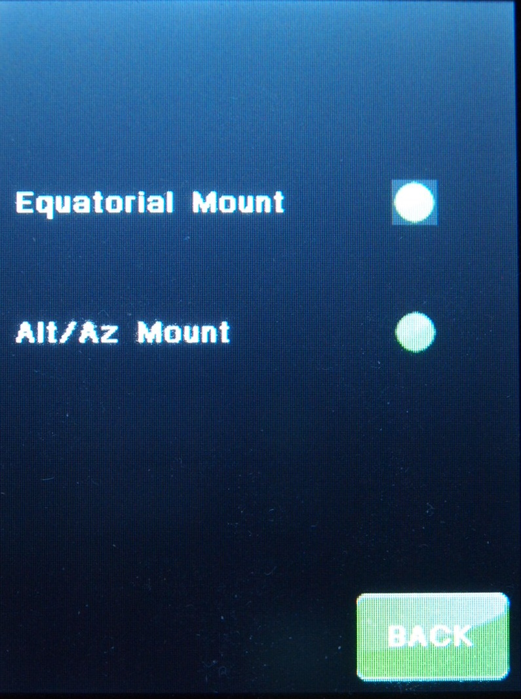

| Interactive Hand-Controller Menus - click on green button to Navigate |
|
 |
Select between the Equatorial Mount type and ALT/AZ mount type.
Equatorial Mount Type - This would be an Custom Mount, GM8, G11, G11T, HGM-200, MI-250, Titan25 or Titan50, or other Equatorial mounts you set up under custom. ALT/AZ Mount Type - Please be warned that if you have an Equatorial Mount type and select this you could slew your telescope into a limit and may cause mechanical damage. This changes the coordinate system transformation required for proper mount operation. If you start up the mount as Equatorial in the CWD position it has the same physical step coordinates as an Alt/Az mount pointing at the Zenith. The problem is, that at the Zenith there is a cone inside which no Alt/Az mount is able to track, since the speed goes up to infinity. Since this is where the mount supposed to be when switching from Equatorial to Alt/Az without a Cold Start, the Az axis has to track very quickly while pointing near to the Zenith, causing a stall. The standard Alt/Az starting position is pointing due South with an Elevation of ZERO. A Cold Start is a mandatory function after changing Mount Design/Type/Gearing. |